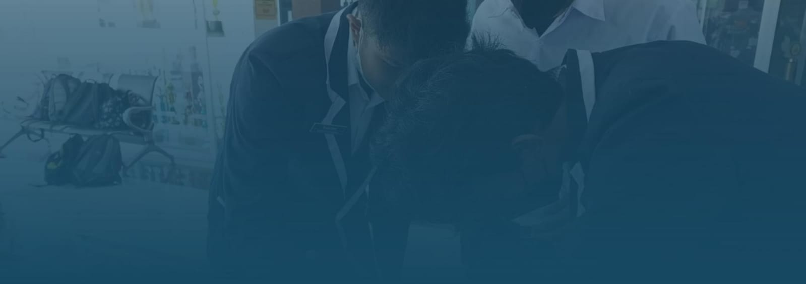

"Empowering Futures, Igniting Minds:

Robotik merupakan inti inovasi di dalam organisasi kami, menjadi pangkalan bagi eksplorasi dan pengembangan teknologi canggih yang membentuk masa depan. Dalam ruang ini, para penggemar robotika berkumpul untuk merancang, menguji, dan mengimplementasikan Internet Of Things.
Programming merupakan salah satu divisi atau squad di dalam TEPDEV yang berfokus pada pengembangan web (Web Development). Di dalam divisi ini, para anggota akan belajar mengenai berbagai aspek penting dalam pengembangan web.

Video Editing merupakan salah satu divisi di TEPDEV yang memiliki fokus utama pada pembelajaran dan praktik dalam pembuatan video berkualitas tinggi, serta pengisian konten-konten yang kreatif untuk platform media sosial TEPDEV itu sendiri.
Desain Grafis adalah salah satu divisi di TEPDEV yang memiliki tanggung jawab utama dalam menciptakan berbagai karya seni digital, termasuk pembuatan logo, poster presentasi, karya seni digital, dan lain sebagainya.

Siswa dinilai berdasarkan kemampuan mereka dalam mengambil inisiatif, menjalankan tugas dengan penuh tanggung jawab, dan bertanggung jawab terhadap pekerjaan yang mereka lakukan.
Dalam kategori ini, siswa dinilai berdasarkan kemampuan mereka dalam merencanakan pekerjaan, mengatur waktu dengan efisien, dan menyusun ide dan informasi dengan terstruktur.
Penilaian pada kolaborasi mencakup kemampuan siswa untuk bekerja sama dengan orang lain, mendengarkan pendapat orang lain, dan berkontribusi dalam tim dengan positif.
Aspek kebaikan menilai perilaku empati dan penghargaan terhadap perasaan orang lain. Siswa dinilai berdasarkan sikap mereka terhadap teman sekelas, guru, dan anggota komunitas lainnya.
Empati mengacu pada kemampuan siswa untuk memahami dan merasakan perasaan orang lain. Siswa yang berempati mampu mendengarkan dengan penuh perhatian, mengenali emosi orang lain, dan memberikan dukungan dan pengertian ketika diperlukan.
Dalam aspek berpikir kritis, siswa dinilai berdasarkan kemampuan mereka dalam menganalisis informasi, mengevaluasi argumen, dan mengambil keputusan yang bijaksana.
Potret Karya bagian Robotik kami, di mana kecanggihan bertemu dengan kepraktisan. Gambar terlampir mengungkapkan sebuah karya masterpiece, yaitu "Pintu Kunci RFID dengan Arduino". Keajaiban teknologi yang memadukan kreativitas dan fungsionalitas.
Potret Divisi Programming, tempat di mana para pengembang muda dengan semangat tinggi belajar dan berkarya untuk membawa konsep-konsep kreatif menjadi kenyataan di dunia maya. Saat ini, fokus kami adalah menghasilkan website inovatif yang mencerminkan esensi "Our Creation" kami.
Potret Divisi Video Editing, tempat di mana kreativitas bertemu teknologi untuk menciptakan karya-karya visual yang menginspirasi. Dalam perjalanan pembelajaran pembuatan video kami, setiap langkah adalah petualangan menuju kemahiran yang lebih tinggi dan ekspresi seni yang lebih mendalam.
Potret Divisi Desain Grafis sedang menggelar diskusi penuh semangat untuk menghasilkan konsep desain yang memukau. Suasana penuh inspirasi dan kegembiraan terpancar dari meja-meja kerja yang dipenuhi dengan sketsa, warna, dan ide-ide inovatif.
Divisi Video Editing SCH telah menampilkan keterampilan kreatif dan dedikasinya dalam Lomba Konten Kreatif yang diadakan oleh SCH. Dengan memahami potensi setiap frame, tim ini berhasil menghadirkan karya-karya visual yang memikat dan inovatif. Mereka tidak hanya terbatas pada teknik penyuntingan dasar, tetapi juga menjelajahi teknologi terkini seperti animasi dan efek visual, menciptakan karya yang memberikan kelebihan kompetitif. Kolaborasi tim yang sinergis, pemahaman mendalam tentang audiens target, dan manajemen waktu yang efisien menjadi kunci kesuksesan mereka dalam menciptakan pengalaman visual yang menginspirasi.
Dalam Lomba Pembuatan Website Statis oleh AWS, divisi programming memegang peran sentral dalam menciptakan solusi yang inovatif dan efisien. mereka dapat mengoptimalkan performa website statis. Kolaborasi yang efektif dengan anggota tim lainnya, perhatian pada desain responsif, keamanan data, dan manajemen infrastruktur yang efisien menjadi kunci keberhasilan dalam menciptakan solusi yang tidak hanya memenangkan lomba tetapi juga memperkuat fondasi keahlian teknis divisi programming.